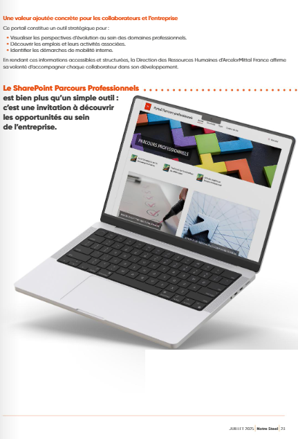

Comprendre les besoins
Conduire des entretiens semi-directifs et croiser les retours avec les informations disponibles pour guider la conception d’un espace utile aux collaborateurs.
RESSOURCES HUMAINES · PROJETS ET TRANSFORMATION
Conception d’un portail SharePoint et préparation de son accompagnement auprès des collaborateurs.
Présentation publique de ma démarche et de mes compétences. Les données individuelles et modalités internes ne sont pas reproduites. Deux extraits du magazine présentant le portail sont illustrés ci-dessous, avec l’encadré d’accès interne masqué.
CONCEPTION D’UN PORTAIL RH
Concevoir un espace commun pour aider les collaborateurs à découvrir les ressources liées à leur évolution professionnelle.
J’ai développé un portail SharePoint consacré aux parcours professionnels, en associant compréhension des besoins, structuration de l’information et préparation de l’accompagnement des utilisateurs.
Ce projet de portail est présenté séparément du diagnostic d’appropriation des dispositifs et de l’accompagnement du PSE.
DE L’ÉCOUTE À LA CONCEPTION
Conduire des entretiens semi-directifs et croiser les retours avec les informations disponibles pour guider la conception d’un espace utile aux collaborateurs.
Structurer les ressources autour des parcours, de la formation, des informations RH et des témoignages. Privilégier une lecture accessible du point de vue de l’utilisateur.
Concevoir l’espace SharePoint, organiser la navigation et examiner les fonctionnalités en situation d’usage, en s’appuyant sur un benchmark.
Penser la communication, les relais RH et managériaux ainsi que l’animation de l’espace pour soutenir sa compréhension et son appropriation.
CONSTRUIRE, AJUSTER ET PRÉSENTER
Construire les relations de travail, recueillir des points de vue complémentaires et clarifier les besoins à prendre en compte.
Organiser l’information, comparer des approches et examiner les fonctionnalités pour faciliter la navigation et l’accès aux ressources.
Intégrer les retours des interlocuteurs et traduire les orientations en un outil concret, en conservant une cohérence d’ensemble.
Présenter et défendre le projet auprès des interlocuteurs de direction, des équipes RH et des organisations syndicales ; préparer les supports de communication et les modalités d’accompagnement.
DES PRODUCTIONS COMPLÉMENTAIRES
Le portail a été développé ; les propositions de suivi et d’accompagnement sont distinguées des résultats mesurés. Aucun taux d’utilisation ni effet sur la mobilité n’est revendiqué ici.
LE PROJET EN IMAGES
Extraits de Notre Steel, juillet 2025 : la communication autour du SharePoint Parcours Professionnels.

PRÉSENTER LA LOGIQUE DE CONCEPTION
ILLUSTRATION GÉNÉRIQUE · AUCUNE CAPTURE DU PORTAIL INTERNE
Trouver les repères utiles pour aborder son parcours professionnel.
Découvrir des ressources, des possibilités de développement et des exemples inspirants.
Identifier les outils et les interlocuteurs permettant d’approfondir sa réflexion.
Cette présentation illustre mon approche de conception. Elle ne reproduit ni l’interface, ni les contenus, ni les liens d’accès de l’entreprise.
MES CONVICTIONS RH
Une information compréhensible et facile à trouver aide chacun à mieux identifier les ressources disponibles.
Les managers, les équipes RH et les relais de proximité jouent un rôle dans l’appropriation et l’animation des dispositifs.
Les retours d’usage permettent d’ajuster les contenus et les modalités d’accompagnement.
Conception, communication, animation et suivi se pensent ensemble pour donner une continuité à la démarche.
CE QUE CETTE EXPÉRIENCE ILLUSTRE
Écoute et analyse des besoins · Gestion de projet RH · Structuration de l’information · Conception SharePoint · Communication RH · Présentation et défense de projet · Préparation de la conduite du changement.